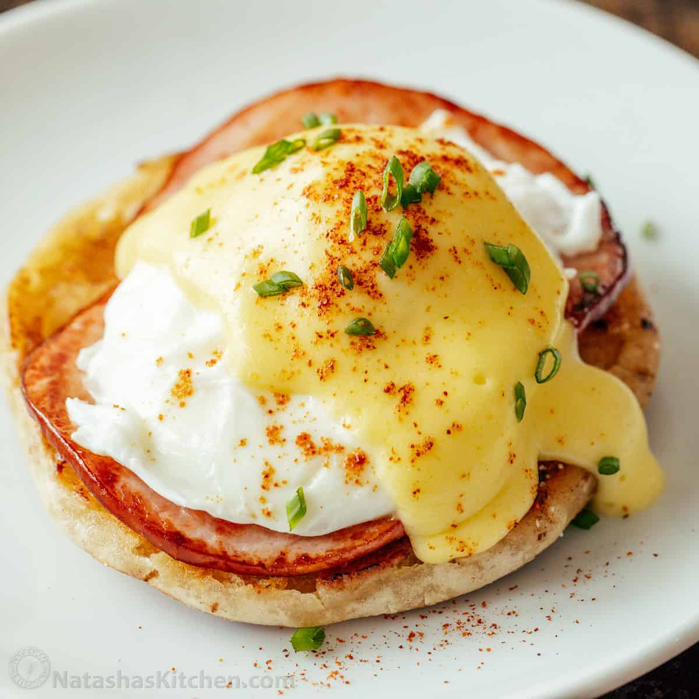

Benedict Eggs

Description
Making eggs Benedict requires careful orchestration. You have to have warm, crispy bacon,
hot buttered toasted English muffins, eggs poached perfectly to your desire, and a warm, creamy,
unbroken hollandaise sauce, all at about the same time. No wonder I rarely eat Eggs Benedict unless
I'm eating out, my brain is scrambled enough as it is in the morning without having to juggle in the kitchen.
Ingredients
- 8 slices bacon or 4 slices Canadian bacon
- 4 large eggs
- 2 teaspoons white or rice vinegar
- 2 English muffins
- Butter
- 2 tablespoons chopped parsley, for garnish
Hollandaise sauce
- 10 tablespoons unsalted butter (if using salted butter, omit the added salt)
- 3 large egg yolk
- 1 tablespoon lemon juice
- 1/2 teaspoon kosher salt
- Dash cayenne or Tabasco sauce
- Cook the bacon: Heat a large skillet on medium low heat. Add the strips of bacon or the slices of
Canadian bacon. Slowly fry, turning occasionally, until the bacon is browned on both sides, and if using
strip bacon, much of the fat is rendered out (about 10 minutes). Use tongs or a fork to remove the
bacon from the pan, set on a paper towel to absorb the excess fat. Don't pour the bacon fat left in the
pan down the drain! Either sop it up with paper towels when it has cooled a bit, or pour it into a jar to
be used later.
- Bring the poaching water to a simmer:
While the bacon is cooking, bring a large saucepan two-thirds-filled with water to a boil, then add the vinegar.
Bring the water to a boil again, then lower the heat to a bare simmer.
- Make the Hollandaise sauce: First time making Hollandaise sauce? Check out our Easy Blender Hollandaise Sauce
for additional details on making the sauce. To make blender Hollandaise, gently melt 10 tablespoons unsalted
butter. Put 3 egg yolks, a tablespoon of lemon juice, 1/2 teaspoon salt in a blender. Blend on medium to medium
high speed for 30 full seconds (count or time it), until eggs lighten in color. Turn the blender down to lowest
setting, slowly dribble in the hot melted butter, while continuing to blend. Taste for salt and acidity and add
more salt or lemon juice to taste. Transfer it to a container you can use for pouring and set it on a warm—but
not hot—place on or near the stovetop.
- Poach the eggs: Essentially, working one egg at a time you crack an egg into a small bowl and slip it into
the barely simmering water. Once it begins to solidify, you can slip in another egg, until you have all four
cooking. Turn off the heat, cover the pan, and let sit for 4 minutes. (Remember which egg went in first,
you'll want to take it out first.) When it comes time to remove the eggs, gently lift out with a slotted spoon.
Note that the timing is a little variable on the eggs, depending on the size of your pan, how much water, how
many eggs, and how runny you like them. You might have to experiment a little with your set-up to figure out what
you need to do to get the eggs exactly the way you like them.
- Toast the English muffins: As soon as all the eggs are in the poaching water, begin toasting your English
muffins. If you can’t get all the muffins toasted by the time the eggs are ready, gently remove the eggs
from the poaching water and set in a bowl.
- Assemble the eggs Benedict: To assemble, butter one side of an English muffin. Top with 2 slices of bacon or
1 slice of Canadian bacon. You can trim the bacon to fit the muffin if you’d like. Put a poached egg on top
of the bacon, then pour some Hollandaise over. Sprinkle some parsley over it all and serve at once.